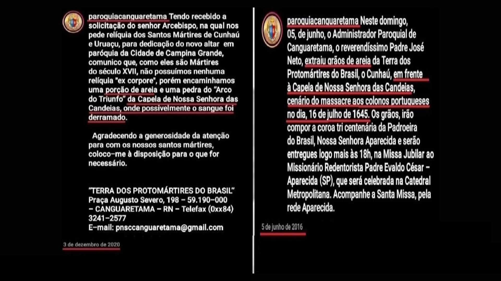
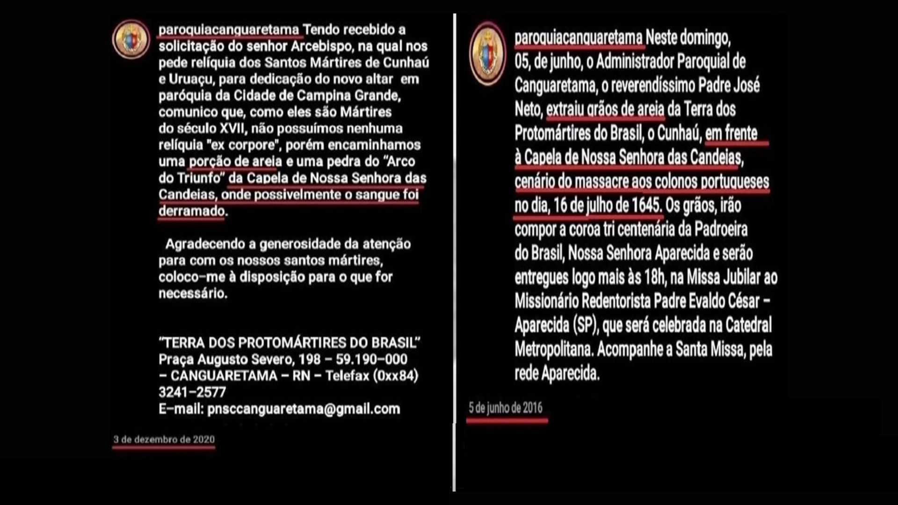

“Existirá,
porventura, alguma coisa no interior?”
(LYRA, 2012, p. 116)
sobre “o primeiro dos martírios, o de 16 de julho de 1645”
(R454, 2011, p. 237)
além da “imagem da padroeira do Cunhaú- suposta testemunha ocular dos
acontecimentos"
(OLIVEIRA, 2003, p. 85)
Já que "quanto à pesquisa arqueológica, informamos que não constam nesta Superintendência registros de realização de pesquisa
arqueológica no referido engenho."
(IPHAN, 2020b)

(IPHAN, 2020b)
Conversando com Augusto Maranhão - A história de Engenho Cunhaú
Visto,
que de “[...] 45 metros, ficaram quinze (CASCUDO, 2017, 114) e ainda era “contígua a capela” (PEREIRA, 1999, p. 16) e tradicionalmente as capelas podiam “estar ou não ligadas à casa-grande.” (MENESES; MUNIZ; SILVA, 2017, p. 06)
Em 1604, [a capelinha edificada pelo Capitão-mor Jerônimo de Albuquerque] foi retratado pelo artista flamengo Frans Post” (R454, 2011, p. 131) onde se ve as estruturas do extinto Engenho Cunhaú histórico como a Casa Grande no centro, e a esquerda uma capela contígua, que poderá ter sido feito em taipa de pilão, já que é visível na pintura linhas verticais, indício corriqueiro da técnica. (OLIVEIRA; MAIA, 2016a, p. 1415-1418)
E a capela “original” de Nossa Senhora das Candeias estaria com seu frontão sobreposto por um cómodo interior ligando a moradia senhorial, talvez pela autorização em 1641, de aumentar a ermida, ao invés de ser edificada uma nova como desejo dos colonos. (FREIRE; 2018) apud (GOMES TAVARES; 2017)
CAPELAS DO EXTINTO ENGENHO CUNHAÚ HISTÓRICO
A capela que se encontra na atual Fazenda Cunhaú, antigo engenho homônimo, ao que tudo indica não é a da Retaliação de 16 de julho de 1645, mas sim outra edificada por Matias de Albuquerque Maranhão, de frente à Casa Grande, em 1654, já que a anterior havia sido destruída na reconquista do engenho. A capela onde ocorrera a Retaliação está atualmente soterrada do lado esquerdo da extinta Casa Grande do Engenho Cunhaú." (OLIVEIRA, 2016, p. 1419)
CASA SENHORIAL DO EXTINTO ENGENHO CUNHAÚ HISTÓRICO
Já a Casa Grande, em fevereiro de 1934, quando do proprietário de Cunhaú era Octavio de Lima Araújo, o historiador Luís da Câmara Cascudo visitou a casa-grande de taipa, aquela mesma que hospedará Henry Koster em 1810. Informava o Dr. Nestor Lima, em 1930, que a antiga casa senhorial achava-se convertida então em um mero armazém, já em estado de deterioração. Atualmente se encontra boa parte transformado na residência do gerente da fazenda, Ademar Rodrigues.(OLIVEIRA, 2016, p. 1420)